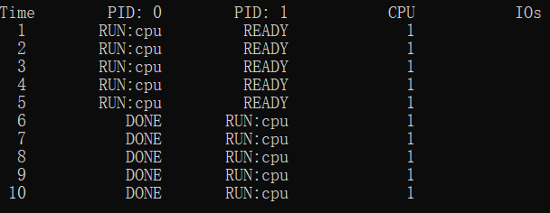
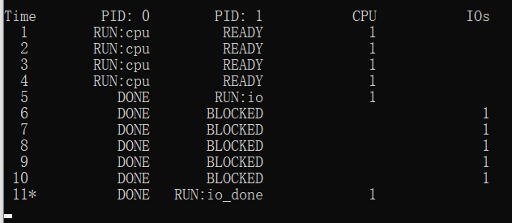

Operating System系列-虚拟化
Operating System系列-虚拟化
什么是虚拟化？
第4章 抽象：进程
从下面代码中可以看到，操作系统追踪进程的一些重要信息。对于停止的进程，寄存器上下文将保存其寄存器的内容。当一个进程停止时，它的寄存器将被保存到这个内存位置。通过恢复这些寄存器（将它们的值放回实际的物理寄存器中），操作系统可以恢复运行该进程。我们将在后面的章节中更多地了解这种技术，它被称为上下文切换（context switch）。
注：有时候人们会将存储关于进程的信息的个体结构称为进程控制块（ Process Control Block， PCB），
1 | // 下面的是【xv6 的 proc 结构】， |
问题:
问题1：
用以下标志运行程序： ./process-run.py -l 5:100,5:100。 CPU 利用率（CPU 使用时间的百分比）应该是多少？为什么你知道这一点？利用 -c 标记查看你的答案是否正确。
解：无脑 100%
(奶奶滴，到这里图片不显示又让我调试半天，typora默认路径分隔符是\，要换成/才行,焯！)
𝘼𝙣𝙨𝙬𝙚𝙧:

问题2：
现在用这些标志运行： ./process-run.py -l 4:100,1:0。这些标志指定了一个包含 4 条指令的进程（都要使用 CPU），并且只是简单地发出 I/O 并等待它完成。完成这两个进程需要多长时间？利用-c 检查你的答案是否正确。
解：无限长，因为第二个进程使用CPU的机会为0
Answer: 10 个时钟周期 ，没看太明白。

问题3:
现在交换进程的顺序： ./process-run.py -l 1:0,4:100。现在发生了什么？交换顺序是否重要？为什么？同样，用-c 看看你的答案是否正确
解：没啥可输出的呀
Answer：

问题4：
现在探索另一些标志。一个重要的标志是-S，它决定了当进程发出 I/O 时系统如何反应。将标志设置为 SWITCH_ON_END，在进程进行 I/O 操作时，系统将不会切换到另一个进程，而是等待进程完成。当你运行以下两个进程时，会发生什么情况？一个执行 I/O，另一个执行 CPU 工作。（-l 1:0,4:100 -c -S SWITCH_ON_END）
问题5：
现在，运行相同的进程，但切换行为设置，在等待 I/O 时切换到另一个进程（-l 1:0,4:100-c -S SWITCH_ON_IO）。现在会发生什么？利用-c 来确认你的答案是否正确。
问题6：
另一个重要的行为是 I/O 完成时要做什么。利用-I IO_RUN_LATER，当 I/O 完成时，发出它的进程不一定马上运行。相反，当时运行的进程一直运行。当你运行这个进程组合时会发生什么？（./process-run.py -l 3:0,5:100,5:100,5:100 -S SWITCH_ON_IO -I IO_RUN_LATER -c -p）系统资源是否被有效利用？
问题7：
现在运行相同的进程，但使用-I IO_RUN_IMMEDIATE 设置，该设置立即运行发出I/O 的进程。这种行为有何不同？为什么运行一个刚刚完成 I/O 的进程会是一个好主意？
问题8：
现在运行一些随机生成的进程，例如-s 1 -l 3:50,3:50, -s 2 -l 3:50,3:50, -s 3 -l 3:50,3:50。看看你是否能预测追踪记录会如何变化？当你使用-I IO_RUN_IMMEDIATE 与-I IO_RUN_LATER 时会发生什么？当你使用-S SWITCH_ON_IO 与-S SWITCH_ON_END 时会发生什么？
第5章 插叙：进程API
以下代码都需要在Unix环境下运行，我是在Linux中运行的
1 |
|
最重要的就是创建进程的API fork() 的使用，fork会创建一个一摸一样的子进程，子进程中fork返回0，父进程的fork则会返回子进程的id，而返回值小于0就代表着子进程创建失败。
1 |
|
在父进程要执行的if块里调用wait，我的理解是主动放弃优先权，让其他进程先运行。
1 |
|
最后是 exec()系统调用，它也是创建进程 API 的一个重要部分②。这个系统调用可以让子进程执行与父进程我同的程序。例如，在 p2.c 中调用 fork()，这只是在你想运行相同程序的拷贝时有用。但是，我们常常想运行不同的程序， exec()正好做这样的事。
rk()系统调用很奇怪，它的伙伴 exec()也我一般。给我可执行程序的名称（如 wc）及需要的参数（如 p3.c）后， exec()会从可执行程序中加载代码和静态数据，并用它覆写自己的代码段（以及静态数据），堆、栈及其他内存空间也会被重新初始化。然后操作系统就执行该程序，将参数通过 argv 传递给该进程。因此，它并谁有创建新进程，而是直接将当前运行的程序（以前的 p3）替换为我同的运行程序（wc）。子进程执行 exec()之后，几乎就像p3.c 从未运行过一样。对 exec()的成功调用永远我会返回。